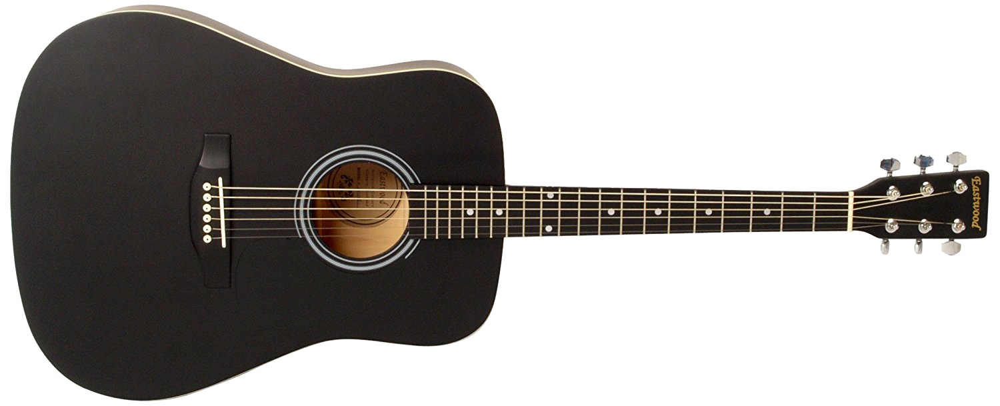
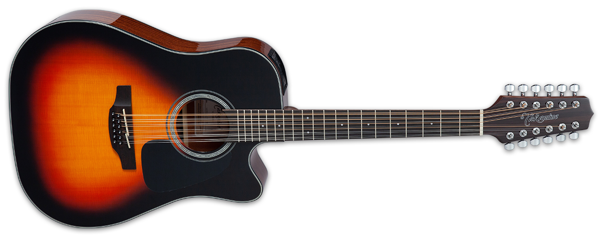

Guitarras
Una guitarra es un instrumento musical de cuerda, generalmente con seis cuerdas, que se toca con los dedos o con una púa, y que se compone de una caja de resonancia en forma de ocho y un mástil con trastes.

Tipos de Guitarras:
-
 La guitarra eléctrica es un instrumento musical que se diferencia de la guitarra acústica en que no tiene caja de resonancia, produciendo su sonido a través de pastillas que captan la vibración de las cuerdas y la convierten en una señal eléctrica amplificada. Requiere un amplificador para ser escuchada a un volumen típico.
La guitarra eléctrica es un instrumento musical que se diferencia de la guitarra acústica en que no tiene caja de resonancia, produciendo su sonido a través de pastillas que captan la vibración de las cuerdas y la convierten en una señal eléctrica amplificada. Requiere un amplificador para ser escuchada a un volumen típico.
-

La guitarra acústica se distingue por su sonido natural, producido por la vibración de sus cuerdas de acero, que se amplifica a través de una caja de resonancia. Esta caja, generalmente de madera, amplifica el sonido y permite que se proyecte sin necesidad de amplificación eléctrica.
-

La guitarra de doce cuerdas o también llamada docerola es una guitarra acústica o eléctrica que tiene doce cuerdas distribuidas en pares, pero las últimas cuatro cuerdas en octavas y las dos primeras en tono unísono, ayuda a generar un sonido más brillante y resonante que el de una guitarra normal de seis cuerdas.
-
 El bajo quinto está conformado por una caja de resonancia compuesta por tapa, aros y fondo, y un mástil en cuya cara anterior se encuentra el diapasón, que cuenta con trastes. Se tiene una gran diferencia con el bajo sexto en la cantidad de cuerdas, siendo que el bajo sexto tiene doce pares y el bajo quinto diez.
El bajo quinto está conformado por una caja de resonancia compuesta por tapa, aros y fondo, y un mástil en cuya cara anterior se encuentra el diapasón, que cuenta con trastes. Se tiene una gran diferencia con el bajo sexto en la cantidad de cuerdas, siendo que el bajo sexto tiene doce pares y el bajo quinto diez.